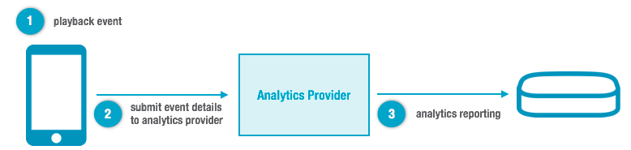

To report playback statistics for analytics, use any of the analytics plugins that
integrate with Player V4.
Note: Ooyala IQ Analytics is automatically included with
Player V4. No separate plugin is needed. For details, see:
Tracking Opt-Out Controls
The Web Player provides two setting levels for tracking metrics. These are:
default and
disabled.
Analytics Plugins
You can use the following analytics plugins.
These plugins were developed using the
Analytics Framework.
Run-time Playback Flow
During playback, a playback event triggers notification about the event to the
analytics provider.

Requirements
If you want to track bitrate information for analytics purposes, you must use one of the following video plugins:
- Bitmovin plugin for DASH and HLS (bit_wrapper.min.js) (except HLS HTML5 in Safari)
- Akamai HD video plugin for Akamai packaged HDS (akamaiHD_flash.min.js)
Note: The Akamai HD Video Plugin for Akamai Packaged HDS for Player
V4 has been deprecated and is scheduled to be disabled. For details and alternatives, see the
OVP Release Notes.
- OSMF Flash plugin for HDS (osmf_flash.min.js)
Note: The OSMF Flash Video Plugin for HDS for Player V4 has been
deprecated and is scheduled to be disabled. For details and alternatives, see the
OVP Release Notes.
The HLS and MP4 Main video plugin (
main_html5.min.js) does not report bitrate information.